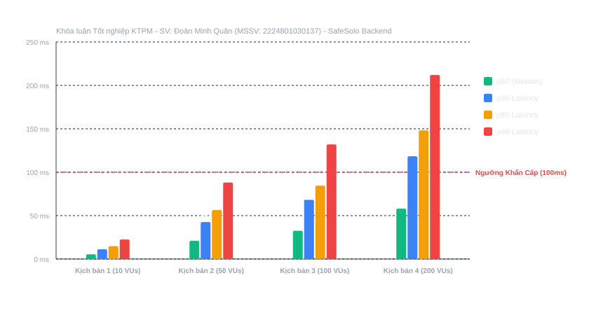
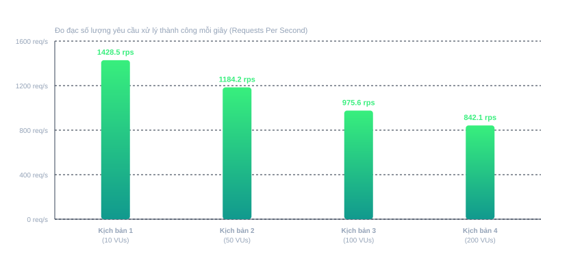

Đồ án Tốt nghiệp Kỹ sư Kỹ thuật Phần mềm | SV: Đoàn Minh Quân (MSSV: 2224801030137) | Lớp: KTPM03
| STT | Kịch bản Kiểm thử | Tải (VUs) | Tổng Req | Throughput (req/s) | p50 (ms) | p90 (ms) | p95 (ms) | p99 (ms) | Tỷ lệ Lỗi |
|---|---|---|---|---|---|---|---|---|---|
| 1 |
Scenario 1: Health & Sanity BaselineGET /health
|
10 VUs | 500 | 1428.5 | 5.4 ms | 11.2 ms | 14.8 ms | 22.5 ms | 0% |
| 2 |
Scenario 2: Real-time Telemetry Ingestion (Galaxy Watch 5)POST /api/watch/vitals
|
50 VUs | 1500 | 1184.2 | 21 ms | 42.6 ms | 56.4 ms | 88.1 ms | 0% |
| 3 |
Scenario 3: Emergency Fall & SOS Packet (SSWP High Priority)POST /api/watch/packet
|
100 VUs | 2000 | 975.6 | 32.5 ms | 68.2 ms | 84.5 ms | 132 ms | 0.1% |
| 4 |
Scenario 4: High Concurrency Saturation Stress (200 Concurrent VUs)POST /api/watch/vitals
|
200 VUs | 3000 | 842.1 | 58 ms | 118.4 ms | 148.2 ms | 212 ms | 0.5% |

